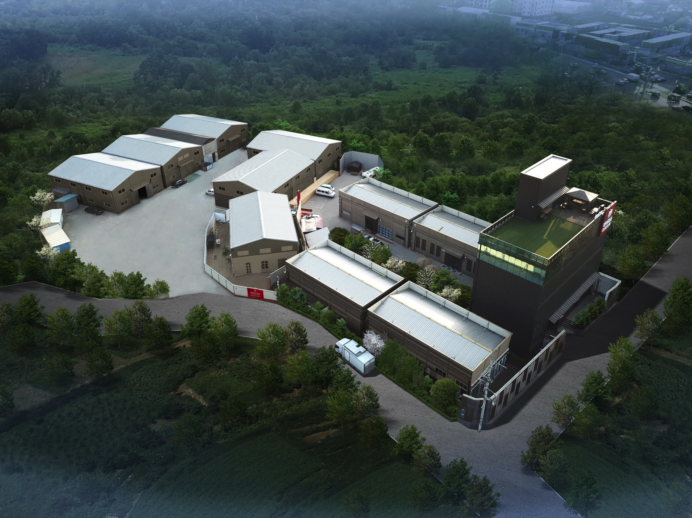

기능을 장면으로 번역
스펙과 USP를 시청자가 바로 이해할 수 있는 사용 장면, 비교 장면, 전후 장면으로 바꿉니다.
마이다스커뮤니케이션은 전 홈쇼핑 17개 채널 경험과 일산 3,000평 촬영센터를 기반으로 기획, 촬영, 실연, 편집, CG, 숏폼 재가공까지 한 번에 수행합니다.
제품을 예쁘게 찍는 것에서 끝나지 않습니다. 어떤 문제를 보여주고, 어떤 실연으로 설득하고, 어떤 장면을 구매 이유로 남길지 방송 흐름까지 함께 설계합니다.
홈쇼핑·세일즈 영상 제작 편수
제품 론칭 누적 경험
전 홈쇼핑 17개 채널 경험
일산 종합촬영센터 기반 제작
고객은 방송 중 짧은 시간 안에 제품의 필요성, 차별점, 사용 결과를 판단합니다. 인서트는 그 판단을 돕는 가장 중요한 판매 장면입니다.
스펙과 USP를 시청자가 바로 이해할 수 있는 사용 장면, 비교 장면, 전후 장면으로 바꿉니다.
문제 제기부터 제품 실연, 구매 이유까지 쇼호스트 멘트와 함께 작동하는 순서로 구성합니다.
TV홈쇼핑용 영상뿐 아니라 유튜브, 상세페이지, 숏폼, SNS 소재로 재가공 가능한 소스를 확보합니다.
제품군마다 보여줘야 할 장면이 다릅니다. 마이다스는 카테고리별 홈쇼핑 문법에 맞춰 필요한 컷과 실연 방식을 설계합니다.
문제 상황과 해결 장면, 사용 전후 차이, 자동화 기능을 직관적으로 보여줍니다.
생활가전 인서트 보기조리 실연, 세척, 비교 테스트, 완성 컷으로 사용 이유를 설득합니다.
주방가전 실연 보기맛, 원물, 조리 과정, 섭취 장면을 중심으로 식감과 신뢰를 보여줍니다.
식품 인서트 보기제형, 사용감, 전후 비교, 브랜드 신뢰 요소를 짧은 컷 안에 압축합니다.
뷰티 영상 보기성분, 섭취 편의성, 라이프스타일 장면을 정보 그래픽과 함께 정리합니다.
건기식 영상 보기공간 연출, 소재감, 라이프스타일 컷으로 제품의 분위기와 활용도를 전달합니다.
설치 전후, 시공 과정, 공간 변화, 유지관리 포인트를 이해하기 쉽게 구성합니다.
설치상품 보기방송 인서트 소스를 쇼츠, 릴스, 광고 소재로 다시 편집해 활용도를 높입니다.
제품 숏폼 보기좋은 제품 설명이 아니라, 방송 중 고객이 결제 버튼을 누르기까지 필요한 판단 순서를 만듭니다.
고객이 이미 겪고 있는 불편함과 구매 맥락을 먼저 보여줍니다.
핵심 기능을 실제 사용 장면으로 보여줘 설명보다 빠르게 이해시킵니다.
기존 방식, 경쟁 상황, 사용 전후 차이를 시각적으로 정리합니다.
제품이 생활 속에서 어떻게 쓰이는지 카테고리별 공간과 모델 동선으로 보여줍니다.
혜택, 구성, 차별점, 신뢰 요소를 마지막에 다시 묶어 전환을 돕습니다.
구성안은 제품 정보, 판매 채널, 방송 시간, 심의 기준을 함께 검토해 제작합니다.
공개 가능한 대표 영상은 성공사례 페이지에서 바로 확인할 수 있습니다. 비공개 샘플은 상품군과 목적을 알려주시면 상담 시 맞춰 공유드립니다.
제작 전 상품 정보를 정리하고, 촬영 전 구성안을 확정해 현장에서는 필요한 판매 장면을 빠짐없이 확보합니다.
제품 설명서, USP, 시험자료, 경쟁 제품, 판매 채널을 확인합니다.
방송 흐름, 실연 장면, 비교 컷, 그래픽 요소를 사전에 설계합니다.
모델, 세트, 조명, 제품 실연, 디테일 컷을 필요한 규격에 맞춰 촬영합니다.
방송용 흐름에 맞춰 컷 편집, 자막, CG, 사운드, 색보정을 진행합니다.
TV홈쇼핑, 유튜브, 온라인 상세페이지, 숏폼 등 채널별 파일로 정리합니다.
거실, 주방, 욕실, 정원, 무한대 호리존, 라이브 방송센터까지 상품군에 맞는 공간을 갖추고 있어 홈쇼핑 인서트와 커머스 영상 촬영을 한 곳에서 연결할 수 있습니다.

한 번 촬영한 소스를 여러 채널에서 활용할 수 있도록 러닝타임, 화면비, 자막 밀도, 후킹 컷을 함께 설계합니다.
방송 흐름과 심의 기준을 고려한 인서트 영상 파일로 정리합니다.
브랜드 채널, 상세페이지, 광고 소재에 맞춰 러닝타임과 구성을 조정합니다.
방송용 소스에서 후킹 컷을 뽑아 9:16 숏폼 소재로 재편집합니다.
홈쇼핑, 라이브커머스, SNS, 영업 자료용 버전을 목적별로 나눠 제공합니다.
아직 자료가 완벽하지 않아도 괜찮습니다. 제품 정보와 판매 목표만 있어도 제작 범위와 일정부터 정리할 수 있습니다.
구성 난이도, 촬영 일수, 그래픽 범위에 따라 달라집니다. 일반적으로 제품 분석과 구성안 확정 후 촬영, 편집, 수정 일정을 함께 잡습니다.
가능합니다. 제품군과 예산에 맞춰 모델, 쇼호스트, 세트, 소품, 푸드 스타일링 범위를 제안드립니다.
소형 제품은 1일 촬영으로 가능한 경우가 많고, 대형 세트나 설치상품, 모델 컷이 많은 경우에는 추가 촬영일이 필요할 수 있습니다.
견적 단계에서 수정 기준을 함께 정합니다. 문구, 자막, 컷 교체, 그래픽 보강 등은 제작 범위에 따라 조정됩니다.
가능합니다. 인서트 촬영 소스를 기반으로 쇼츠, 릴스, SNS 광고 소재를 별도 버전으로 재가공할 수 있습니다.
프로젝트 목적에 따라 제작 방식이 함께 묶이는 경우가 많아, 관련 서비스로 바로 이동할 수 있게 정리했습니다.
제품, 목표 채널, 예산, 일정이 정해져 있지 않아도 괜찮습니다. 현재 상황을 기준으로 가장 적합한 영상 제작 범위를 제안드립니다.